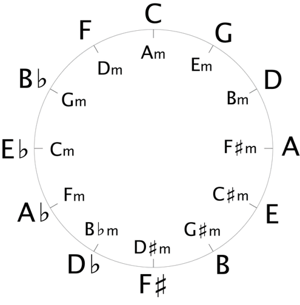

Now that we have seen some common music styles, lets look at the circle of fifths. You might be asking
yourself "what is this?" This is an extremely handy tool for composition of your own songs. This gives you
some ideas of what chord progressions should sound good together.
Let's take a look at C. The chords to the left and right of this are F and G. The chord placed on the inner
part of the ring is Am. Do these four chords sound familiar? Play the four of them together. How about now?
If not then I'd suggest opening up Sparks Fly
by Taylor Swift.
How about shifting to the right by one. You should be looking at G, Em, C and D. Are these chords familiar
to you? Try playing them. Ringing any bells? Well they should. These are the exact same chords used in
Mine by Taylor Swift and
Apologise by One Republic.
Let's look a bit more closely at both sets of chords. Do you notice anything? The first group is C, Am,
F, G. The second group is G, Em, C, D. If you play another instrument or have learned music theory in the
past, you'll likely understand where this is going. Take a moment to consider these questions before
scrolling down to the next section and looking at what connects these two things.

You may have guessed what the thing connecting C, Am, F, G and G, Em, C, D is. They use the exact same chord progression. They have a similar sound while using different notes. The chord progressions used here is I – vi – IV – V. The letters here denote Roman numerals. Capital letters denote a major chord, lowercase letters denote a minor chord. See a list of common chord progressions below. All of these are written in the key of C major:
You might say to yourself "that's all well and good but how can I convert Roman numerals to music?" Well
here's your answer: we've already looked at this. Remember all the scales we looked at? The C major scale
is posted below.

Recall that the notes in the scale are C D E F G A B C from
lesson 4. What's the first note in the scale? It's a C. How about the
fourth note? That's an F. And the fifth? That's a G. Now look back at the first chord progression in the
bulleted list. I – IV – V. C – F – G. By looking at scales to find the root note, you can build these
out to create chord progressions you like. If you're a budding songwriter, why not play around with a few
of the above patterns? Take some lyrics you've already written and try matching them to one of the
progressions listed above.